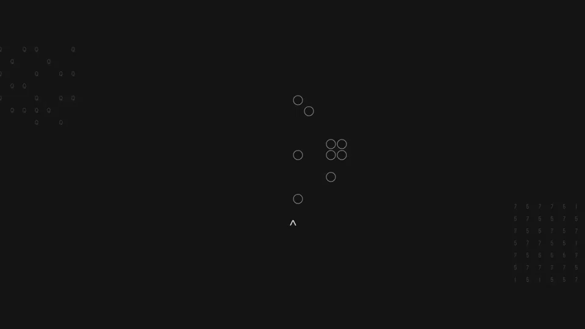
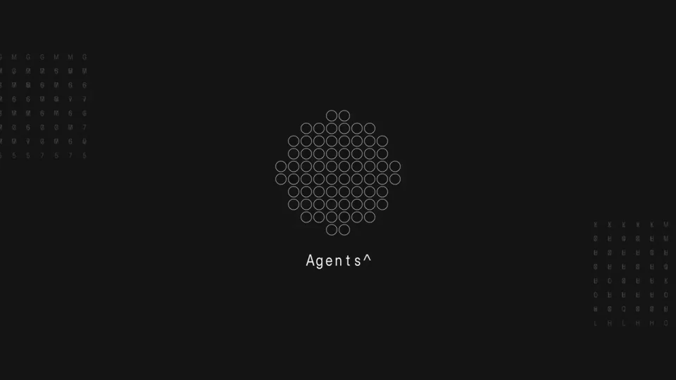
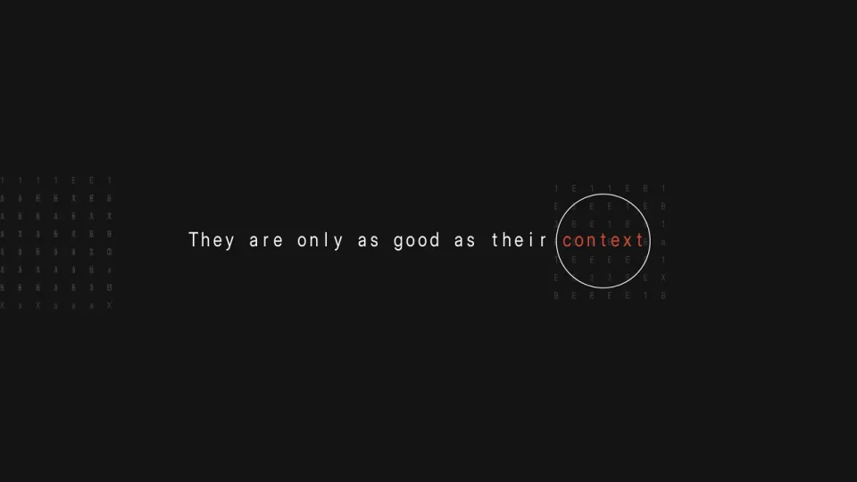

Parallel Web Systems / V341
上下文环形标题
用极少的文字和细圆环，把注意力从代理引向它依赖的上下文。
构图与编排 可播放 · 可替换内容
整体编排规则示例
查看 HTML 源码
<!doctype html><html lang="zh-CN"><meta charset="utf-8"><meta name="viewport" content="width=device-width,initial-scale=1"><title>上下文环形标题 · sequence</title><style>html,body{margin:0;width:100%;height:100%;overflow:hidden;background:#111111}canvas{display:block;width:100%;height:100%;object-fit:contain}</style><body data-mode="sequence"><canvas width="1000" height="600"></canvas><script src="data.js"></script><script src="common.js"></script><script src="scene.js"></script><script src="bridge.js"></script></body></html>画面元素中心圆环簇等宽短句上下文关键词两侧点阵
MOTION LANGUAGE
动作与构图
局部动作 · 构图规则
01
先组合，再把画面让给句子
先组合，再把画面让给句子规则示例
查看 HTML 源码
<!doctype html><html lang="zh-CN"><meta charset="utf-8"><meta name="viewport" content="width=device-width,initial-scale=1"><title>上下文环形标题 · sequence</title><style>html,body{margin:0;width:100%;height:100%;overflow:hidden;background:#111111}canvas{display:block;width:100%;height:100%;object-fit:contain}</style><body data-mode="clip" data-start="1" data-end="4"><canvas width="1000" height="600"></canvas><script src="data.js"></script><script src="common.js"></script><script src="scene.js"></script><script src="bridge.js"></script></body></html>细圆环在中心聚成一个簇，Agents 位于其下。环簇退出后再出现完整判断句，边缘稀疏符号保持低对比。
02
关键词拥有最后一个动作
短句沿同一基线逐步展开，context 最后出现并被细圆圈包围。黑底、浅灰等宽字和少量暖橙色即可形成层级，圈线不覆盖文字。
03
保留依赖关系，替换主张
可换成工具与数据、创作与素材等一对依赖关系。先给主体，再给限制条件；关键词短而明确，前后两段都围绕同一中心。
SEQUENCE
段落与节奏
点击段落，定位到上方编排示意。




画面参考 · 离散静帧
KEEP THE RELATIONSHIPS
制作其他主题
- 可换成工具与数据、创作与素材等一对依赖关系。先给主体，再给限制条件；关键词短而明确，前后两段都围绕同一中心。
制作约束
中心圆环簇 / 等宽短句 / 上下文关键词 / 两侧点阵
- 用极少的文字和细圆环，把注意力从代理引向它依赖的上下文。
- 细圆环在中心聚成一个簇，Agents 位于其下。环簇退出后再出现完整判断句，边缘稀疏符号保持低对比。
- 短句沿同一基线逐步展开，context 最后出现并被细圆圈包围。黑底、浅灰等宽字和少量暖橙色即可形成层级，圈线不覆盖文字。